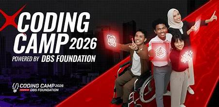

Beasiswa Coding Camp 2026
Fokus pada Karir & Masa Depan (Profesional & Umum) 2026

Evolusi Performa dan Aksesibilitas Web
Ingin menjadi talenta digital profesional tapi bingung harus mulai dari mana? Beasiswa Coding Camp 2026 yang didukung penuh oleh DBS Foundation bekerja sama dengan Dicoding hadir sebagai solusi tepat. Program ini merupakan pelatihan intensif berskala nasional yang dirancang untuk membekali generasi muda Indonesia dengan keterampilan teknologi tingkat lanjut.